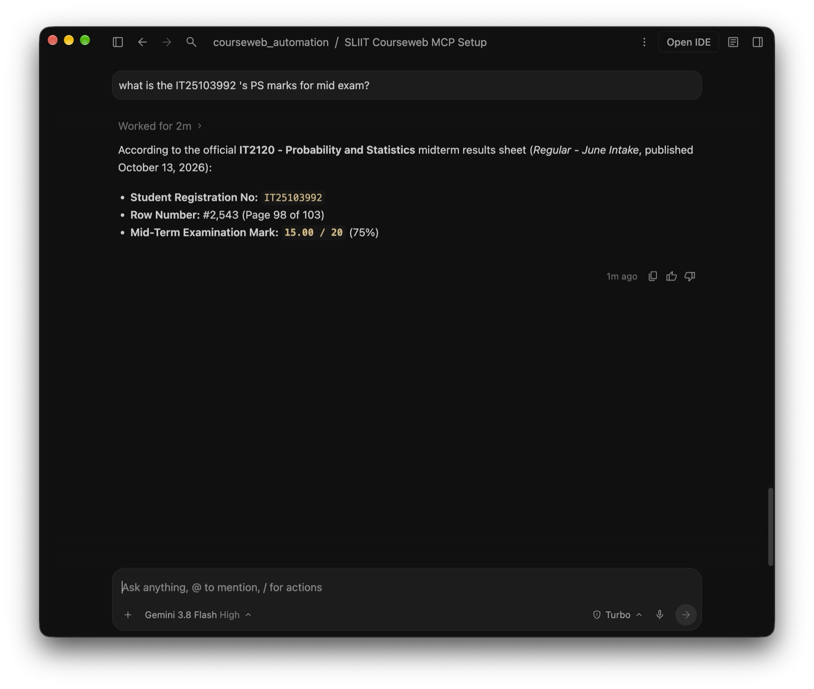
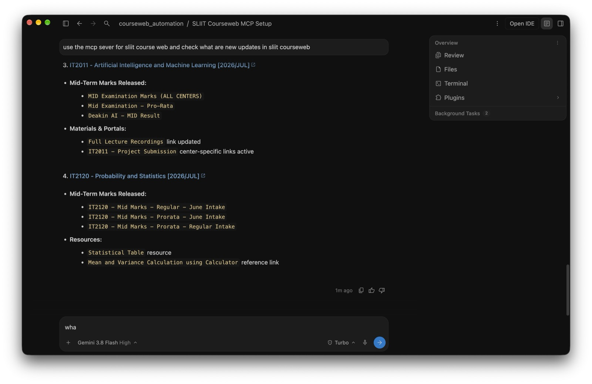
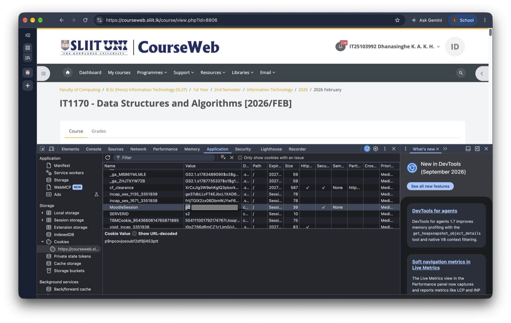

Connect Claude Code, Antigravity, and Cursor directly to your SLIIT Moodle portal. Sync all module materials, search 100+ page exam marks, and track deadlines straight from your IDE. Claude Code, Antigravity, හරි Cursor හරි කෙලින්ම SLIIT Moodle එකට connect කරන්න. හැම සතියෙම තියෙන lecture notes, lab sheets, deadlines සහ පිටු 100ක exam marks තප්පරෙන් ඔයාගේ code editor එකටම ගන්න. Claude Code, Antigravity, மற்றும் Cursor-ஐ நேரடியாக SLIIT Moodle-உடன் இணையுங்கள். Lecture slides, lab sheets, deadlines மற்றும் 100 பக்க பரீட்சை பெறுபேறுகளை உங்கள் IDE-க்குள்ளேயே நொடிகளில் பெறுங்கள்.
Select your tool below, copy the prompt, and paste it into your agent chat.
From searching 100-page exam mark sheets to 1-prompt setup. Turn sound on for the full experience! පිටු 100ක PDF වලින් Marks හොයන හැටි, Deadline alerts සහ 1-Prompt setup එක ක්ෂණිකව බලන්න. 100 பக்க PDF-ல் இருந்து பரීட்சை முடிவுகளை தேடுவது மற்றும் 1-Prompt அமைப்பு.
Here is how SLIIT students use this MCP server daily in their workflow.
Lecturers publish PDF result sheets containing thousands of student rows. Prompt: "What are the PS mid exam marks for IT25103992?". It searches row #2,543 on Page 98 and reports 15.00/20 (75%) instantly. Lecturers ලා දාන පිටු 100ක PDF mark sheet එකේ තමන්ගේ IT number එක හොයන්න scroll කරලා එපා වෙලාද? Agent ගෙන් අහන්න විතරයි තියෙන්නේ — Row 2,543 (Page 98) හොයලා 15.00/20 (75%) කියලා තප්පරෙන් කියනවා! விரிவுரையாளர்கள் இடும் 100 பக்க PDF-ல் உங்கள் IT எண்ணை தேடி அலுக்க வேண்டாம். Agent நொடிகளில் Row 2,543 (Page 98)-ஐ கண்டுபிடித்து முடிவை வழங்கும்!

Prompt: "Check what are new updates in SLIIT courseweb". The agent scans your enrolled courses, alerting you that mid-term marks were uploaded and recording links refreshed. "Courseweb එකේ අලුත් updates මොනවද?" කියලා ඇහුවම IT2011 (AI/ML) සහ IT2120 (Probability & Statistics) වල Mid-Term marks release වෙලා තියෙන බවත්, lecture recordings update වෙලා තියෙන බවත් agent ක්ෂණිකව කියනවා. ஒரே கேள்வியில் உங்கள் அனைத்து பாடங்களின் புதிய அறிவிப்புகள், lecture recordings மற்றும் பரீட்சை முடிவுகளை agent பட்டியலிடும்.

Lists all enrolled modules, titles, and Moodle course IDs.
Fetches upcoming assignment cutoffs and calendar events.
Bulk downloads lecture notes and lab sheets with MD5 deduplication.
Your IT number and password stay strictly on your local computer. We never transmit credentials to external servers.
Best for Mac, Windows, and Linux desktops. Playwright launches a browser window, auto-types your credentials, and pauses for Microsoft Authenticator approval. Saved to storage_state.json.
SLIIT_USERNAME & SLIIT_PASSWORD in .env
Best for headless Linux servers, GitHub Codespaces, or VPS instances where no browser UI exists. Extract your session cookie in 1 click from Chrome DevTools.

"Every semester at SLIIT, students spend hours downloading weekly slide decks, getting logged out due to 20-minute session timeouts, and missing obscure deadline posts. We built this MCP server so students and developers can talk directly to their academic portal using AI."
.env and storage_state.json.
interactive_login tool. It launches a visible browser window, pre-fills your email, and pauses so you can approve the prompt on your Microsoft Authenticator app.
Set up in under two minutes. Free, open source, and 100% local.